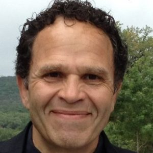

Team

Dr. Marwan Hassoun
Founder & President
Dr. Hassoun has over 30 years of experience in the semiconductor industry and has been involved in building and managing innovative integrated-circuit products, including communications, processor and co-processor designs, and large complex System-on-Chips with high-speed analog, digital, memory, and RF circuits.
His experience includes academia, startups, large semiconductor companies, expert-witness work, intellectual-property evaluation, IP strategy, and innovation services.
Download Curriculum VitaeIntellectual Inspiration Team
The team has expertise across the full deep-submicron integrated-circuit product lifecycle, including planning, design, licensing, verification, integration, synthesis, physical design and layout, testing, qualification, fabrication, debug, revisions, and customer support.